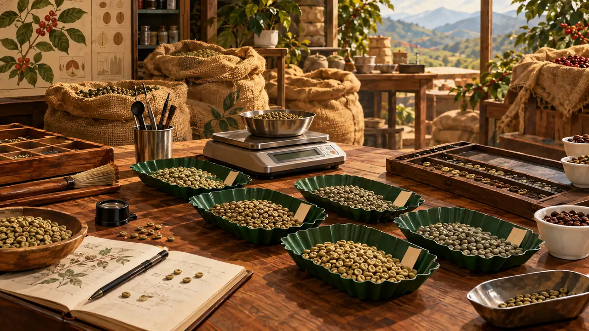

Filière et marché
De la ferme au comptoir, la filière réunit producteurs, exportateurs, importateurs, torréfacteurs et cafés. Les chiffres ci-dessous précisent l’année et le périmètre.
L’essentiel en trois points
- Production mondiale 2025/26 : 183,6 millions de sacs de 60 kg, record, contre 175,9 en 2024/25 ; consommation 180,6 M ; excédent de 3,0 M de sacs, le premier depuis 2020/21 après quatre déficits (2021/22 à 2024/25) (OIC, octobre 2026, estimations du secrétariat) [1].
- Exportations africaines, toutes formes : 17,9 millions de sacs en 2025/26, soit −6,7 % sur 19,19 M en 2024/25 ; l’Éthiopie recule de 8,3 % [1].
- Prix de référence : indicateur composite OIC (I-CIP) de 261,26 cents US par livre en octobre 2026 [1]. Chaîne de valeur et labels : à documenter, aucun chiffre n’est affiché sans source.
Approfondir
Touchez un titre pour ouvrir ou fermer la rubrique.
Chiffres de l’année caféière 2025/26
Source : Coffee Market Report de l’OIC d’octobre 2026 [1]. L’année caféière court d’octobre à septembre ; les valeurs sont des estimations du secrétariat, par année caféière. Les estimations par pays servent à établir un bilan mondial cohérent ; elles ne décrivent pas la production relevée sur le terrain dans chaque pays [1].
| Indicateur | 2024/25 | 2025/26 |
|---|---|---|
| Production totale | 175,9 | 183,6 |
| Consommation | 182,2 | 180,6 |
| Équilibre offre et demande | −6,2 | +3,0 |
| Région | 2024/25 | 2025/26 |
|---|---|---|
| Asie et Océanie | 50,4 | 54,6 |
| Amérique du Sud | 82,8 | 84,1 |
| Amérique centrale et Mexique | 18,9 | 19,9 |
| Afrique | 23,9 | 25,0 |
Consommation en Afrique : 13,3 M de sacs en 2024/25 et 13,4 M en 2025/26 [1].
Commerce, année caféière 2025/26 (octobre 2025 à septembre 2026) : les exportations mondiales de café vert atteignent 123,93 millions de sacs en 2025/26 (+1,3 % sur 122,33 M), et toutes formes confondues 142,39 M (+1,0 % sur 141,02 M). Le vert représente 87,0 % des exportations, le soluble 12,5 % et le torréfié 0,5 %. Les exportations de café vert de robusta dépassent 50 millions de sacs pour la première fois (50,1 M, +12,3 %), soit 40,4 % des exportations de café vert, tirées par le Viêt Nam (26,37 M de sacs, +26,7 %) [1].
Afrique : exportations, toutes formes, de 17,9 millions de sacs en 2025/26, soit −6,7 % sur 19,19 M en 2024/25 ; toutes les grandes origines africaines reculent, l’Éthiopie le plus (−8,3 %, soit −0,62 M de sacs) [1].
Prix de référence (octobre 2026)
Moyennes mensuelles de l’indicateur composite OIC et de ses groupes, en cents US par livre [1]. Les prix varient chaque mois ; l’OIC note une hausse des arabicas et une baisse des robustas en octobre 2026, avec des stocks certifiés d’arabica américains à 0,23 M de sacs, plus bas niveau de fin de mois depuis janvier 2002 [1].
| Indicateur | Octobre 2026 |
|---|---|
| I-CIP (composite) | 261,26 |
| Colombian Milds | 357,85 |
| Other Milds | 334,99 |
| Brazilian Naturals | 294,49 |
| Robustas | 164,19 |
Ces prix concernent des groupes de cafés verts négociés sur les marchés internationaux. Ce rapport ne publie pas de prix propre au Bénin ; un prix béninois reste à documenter.
Production mondiale en 2022/23 (historique)
Données et statistiques
L’OIC diffuse les volumes et tendances du commerce mondial du café : exportations, importations et réexportations [3].
Acteurs, prix, labels
À documenter : chaîne de valeur, prix, classement qualité et labels, avec sources. Aucun chiffre n’est affiché tant qu’il n’est pas vérifié.
Image : illustration générée pour le site, à valeur éditoriale, pas un document photographique.
Termes du dictionnaire
Références
Les affirmations renvoient aux références numérotées ci-dessous, avec leur date de consultation. Les rubriques marquées « à documenter » n’ont pas encore de source vérifiée et n’affirment rien. Certaines sources sont secondaires : leur nature est indiquée dans leur intitulé.
- OIC, Coffee Market Report, octobre 2026 (rapport mensuel, statistiques de l’année caféière 2025/26) · consulté le 20 novembre 2026
- OIC, Coffee Report and Outlook, décembre 2023 · consulté le 20 novembre 2026
- OIC, base de données statistiques mondiales du café · consulté le 20 novembre 2026